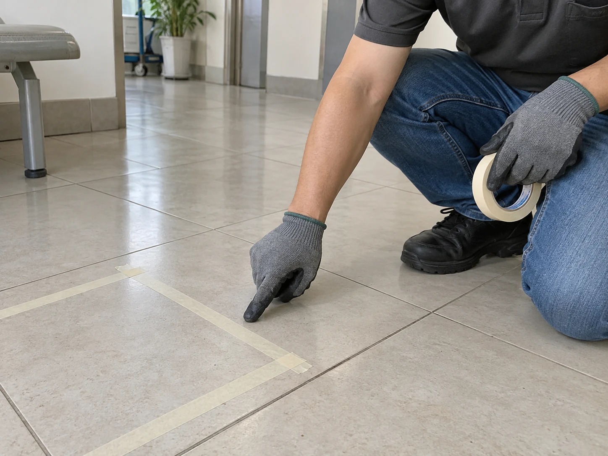
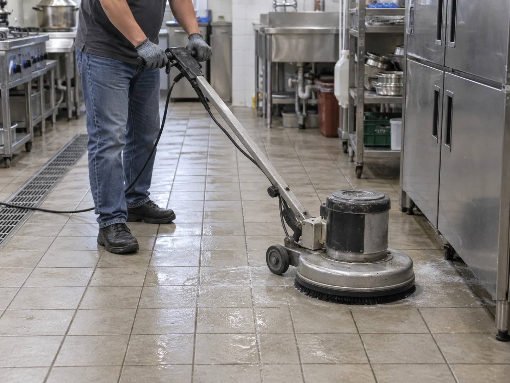
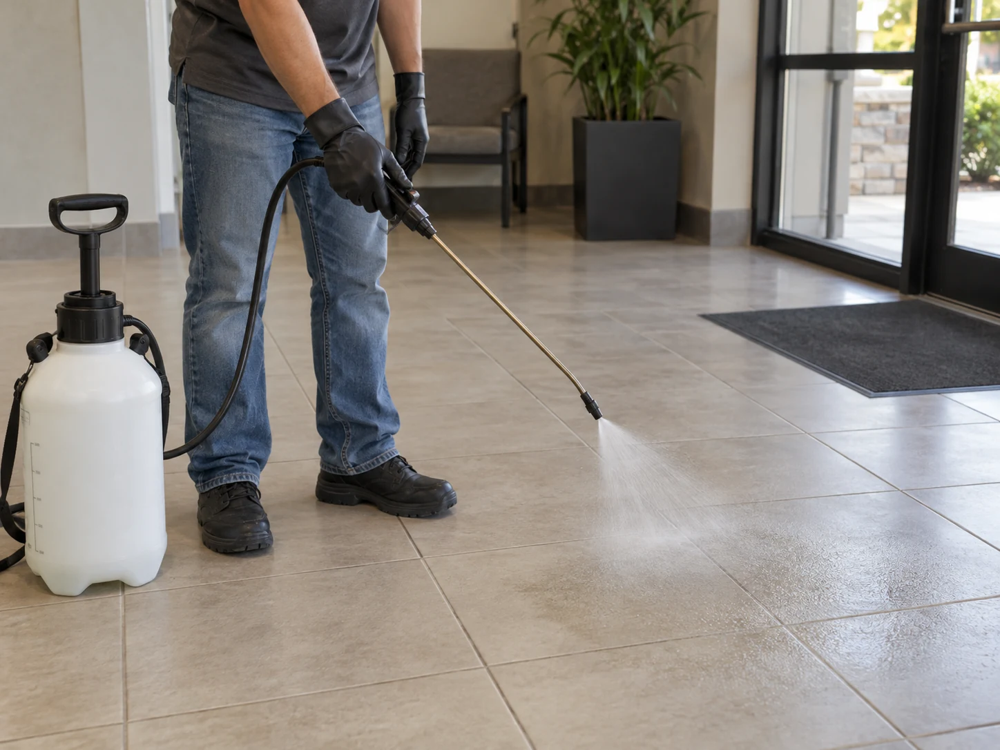
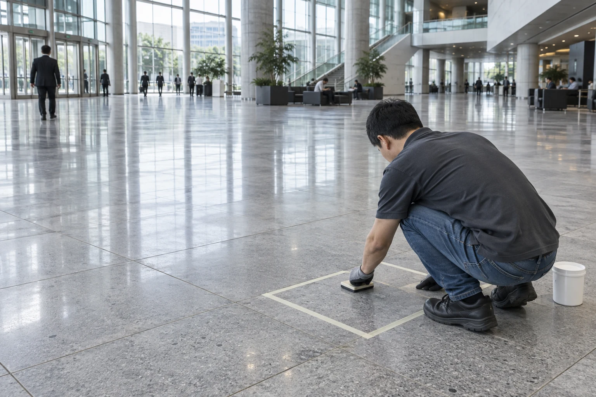

일반 타일
표면 상태와 오염을 확인합니다.
표면 식각 공법
전용 약제로 기존 타일·석재의 표면을 미세하게 처리합니다.
재질과 표면 상태에 맞는 조건으로 시공합니다.
약제를 도포하고, 재질에 맞춰 반응을 관리한 뒤 세척합니다.
바닥 표면이 달라지는 과정을 확대해서 살펴보세요.
바닥 재질과 샘플 결과에 맞춰 약제의 도포량을 조절합니다.
미세 표면 변화를 확대한 원리 설명도 · 실제 크기·반응 속도와 다릅니다.
재질과 표면 마감, 기존 오염을 확인하고
샘플 결과에 맞춰 작업 조건을 정합니다.
표면 상태와 오염을 확인합니다.
재질에 맞는 약제를 선택합니다.
광택과 반응을 함께 살핍니다.
표면 마감에 맞춰 조건을 정합니다.
재질 표현은 이해를 위한 그래픽입니다. 실제 바닥의 마감과 기존 처리 상태를 함께 확인합니다.

작은 구역에서 반응을 확인하고, 금속·벽면·집기와 이용 동선을 보호합니다.

기름과 오염을 먼저 제거해 약제가 표면에 고르게 작용하도록 준비합니다.

재질과 샘플 결과에 맞춰 도포 상태와 반응 시간을 관리합니다.
잔여액을 세척·회수하고, 바닥 상태와 이용 시점을 안내합니다.
미끄럼 변화와 색상·광택,
실제로 시공할 범위를 함께 확인하세요.

실제 사용할 바닥에서
같은 조명 아래에서
필요한 구역을 함께